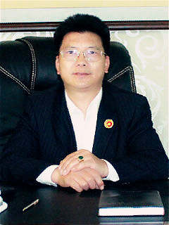

董事长致辞

中国大森林投资控股股份集团有限公司主要从事国家支持的生态林业产业化项目、生态农业产业化项目、中医药产业链投资、大健康产业链项目、养生养老产业等;2013年进入中国大陆，与中国中铁物资集团、中国中船重工集国、四川省华资股权基金管理有限公司、成都金世源酒店管理有限公司，成都凯如商贸有限公司等企业建立了长期稳定的合作伙伴关系，并投资成立成都市和平道实业有限公司，成功收购了重庆太森农林发展有限公司、重庆格雷恩农业开发有限公司、 重庆远银农业开发有限公司、湖北农教苗木发展有限公司、云南西双版纳山达农业科技有限公司等，而且得到了中国农村教育发展中心、中国•城乡小康发展中心、西南农业大学、重庆师范大学营养保健食品研究所、重庆DS越年再生稻研究所、中华名医杂志社、世界英才杂志社等单位在技术、资源方面的大力支持，2014年3月开始中国中医药交易所的筹建工作，得到了成都市政府、上海市政府的大力支持。我们近两年还在国内外投资了柬埔寨金边建设地产项目、东南亚金铜矿项目、深圳港西部政府码头项目、广东军用机场建设项目、广州市商业建设地产项目、亚洲皮革大宗商品交易中心项目得到了各地政府和社会的大力支持。
中国大森林集团公司的主营项目是林业产业化投资项目：目前我们在云南西双版纳拥有100万亩林地、重庆拥有50万亩林地、成都正在整合的21公顷林地。我们把每50亩的林地打包进行开发，既扩大了地球的绿化面积，也提高了空气的质量，从而改善了人们的生活，让人们享受到健康，成年的树木可以砍伐做家具，树枝可做纸浆、树苗，安全又环保。我们的林地还可开发建造养生别墅区、休闲社区、办公场所、居家住宅、养老院这样的环保生活圈等，为人们提供了多项服务。目前在云南西双版纳拥有100万亩林地、重庆拥有50万亩林地、武汉拥有上万亩林业育苗基地、成都正在整合的21公顷林地。2014年大森林集团准备投资800亿以上，运用承包100万亩林业赠送3950栋庄园，建设配套的木板厂、纸浆厂、药材厂、销售公司、会所、酒店、休闲、养老中心等系列产业链项目，并让每个庄园主都拥有私人林业银行的全新商业模式；准备在未来3-5年还在全国整合300万亩林地进行产业化、规模化生产；弥补国内木材、纸浆、中药材的巨大需求；解决农民60万人的就业、生活问题；上绞利税50亿以上；在碳排放量方面为国家排优解难。
中国大森林集团未来最大的项目是对中医药产业链的投资与开发。中医药是我国国粹，是我们的祖先用生命做实验总结出来的精粹，自新中国成立后，各届领导都高度重视中医药的发展。因此我们通过对中医药的健康种植、合理加工，运用中医药交易所促进中医药的交易，推动中医药发展，保护和发扬中国国粹。
在这样一个团结互助，共同进步的团体里，我们目标很明确，就是为了满足国家的需要和自身的需求，为了国家的繁荣昌盛而奋斗，尽我们最大的努力帮助国家实现共同富裕，实现中国梦！